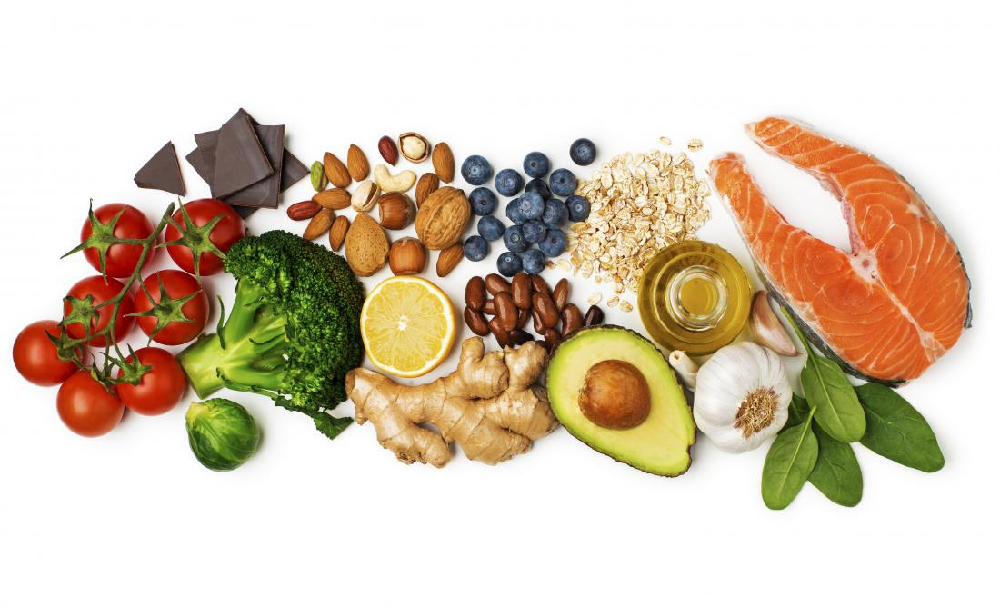

Svakoga dana unosimo hranu u organizam i to radimo cijelog života. Zašto nam je hrana neophodna? To je "gorivo" koje naš organizam snadbijeva energijom, neophodnom za njegovo funkcionisanje. Što je organizam aktivniji, potrebno mu je više energije: za vožnju bicikla ili učenje potrebno ti je više energije nego za gledanje televizije. Hrana nam treba iz više razloga:
|

Hrana se sastoji od hranljivih materija, koje se razlikuju po hemijskom sastavu. Tri su osnovne grupe hranljivih materija: ugljeni hidrati, masti i bjelančevine. U hrani su ove materije zastupljene u različitim količinama. Osim hranljivih materija, hrana sadrži vodu, minealne soli, vitamine. |